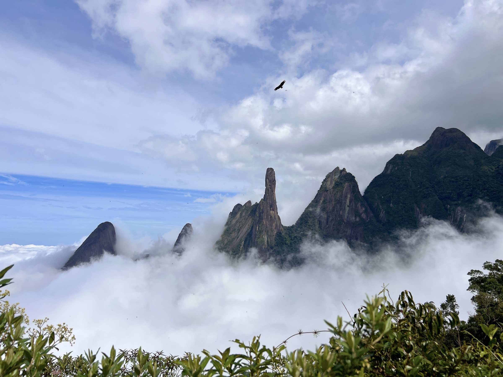

Parque Nacional da Serra dos Órgãos
Famoso pelas trilhas desafiadoras e paisagens incríveis.
Explore as belezas naturais de Teresópolis através dos seus parques e trilhas incríveis. Descubra a biodiversidade e os eventos especiais que ocorrem na nossa região.
Famoso pelas trilhas desafiadoras e paisagens incríveis.

Ideal para montanhismo e apreciar a rica biodiversidade.
Perfeito para trilhas leves e contato com a natureza.